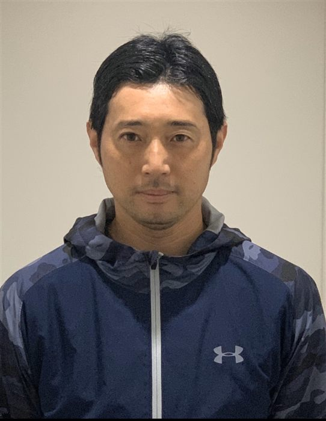
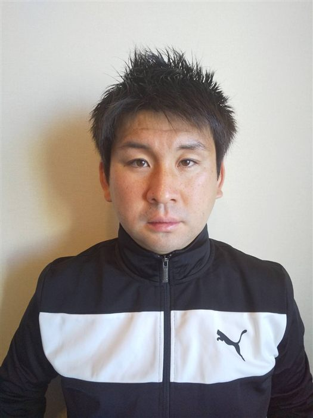
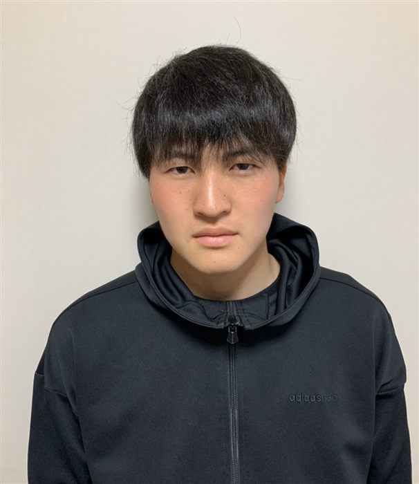
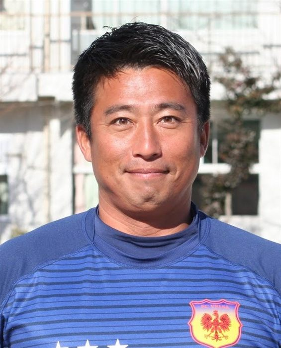
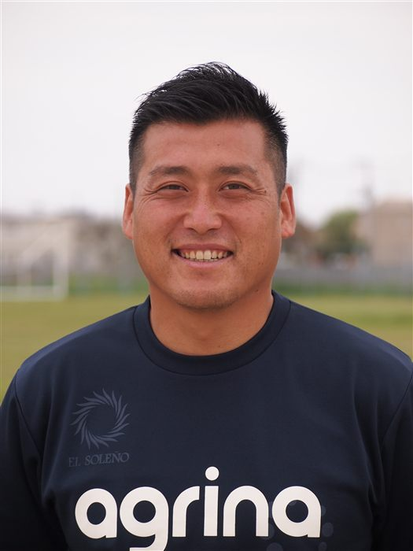
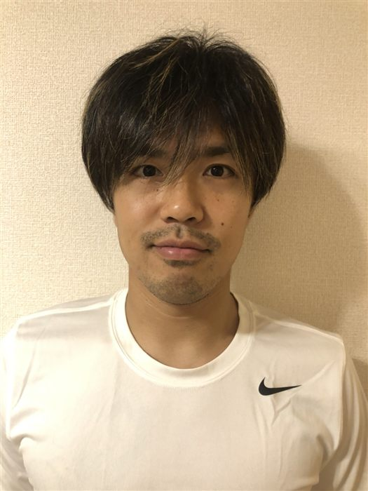
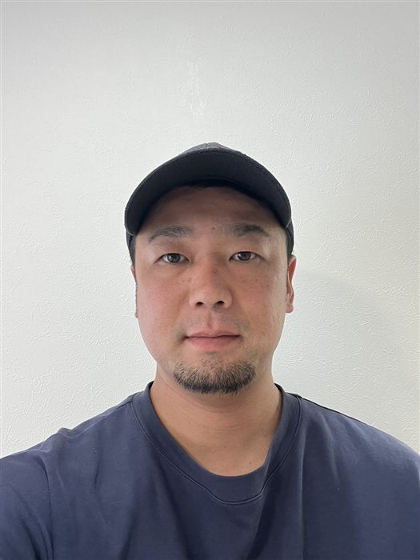
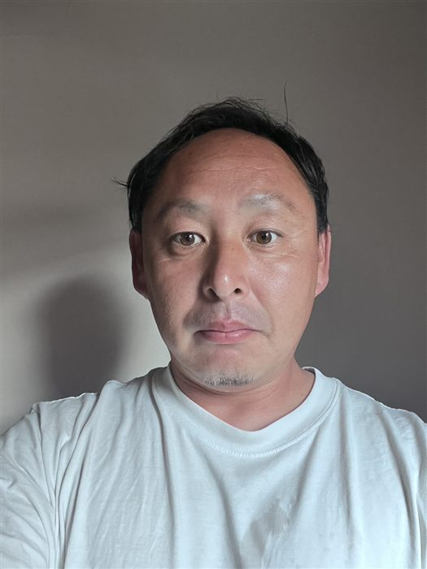

代表
コーチ・スタッフCOACH & STAFF

監督
手塚 祐治
経歴を見る
選手歴
- ブラジル1部 プロ契約
- ituano — パウリスタ優勝・1部昇格
- ituano — 全国選手権2部
指導歴
- 2007〜2010 関東第一高校（2007 関東大会準優勝、2010 インターハイベスト8・選手権都予選ベスト4 ほか）
- 2011〜2019 田口フットボールアカデミーJY
- 2020 城北ボレアス・アローレはちきた

GKコーチ
星 瑛
経歴を見る
選手歴
- 横浜市立東高校（インターハイ県予選ベスト4）
- 2000〜2018 FCアヴァンツァーレ赤羽
指導歴
- 2013〜 都立荒川商業高校
- 2012〜2019 tfaJY
- 2020〜 城北ボレアス
資格
- JFA公認C級・GK C級

コーチ
水野 柊
選手歴
- 都立大山高校
指導歴
- 2018〜2019 tfaJY
- 2020〜 城北ボレアス

アドバイザー
小林 篤史
経歴
- 2015〜 F.C.VELSA

アドバイザー
三富 貴徳
経歴
- 2016〜 F.C.VELSA

スペシャルアドバイザー・個人スキル
岩間 雄大
選手歴
- アルテ高崎
- V・ファーレン長崎
- 松本山雅FC
- 栃木SC
- 藤枝MYFC
- おこしやす京都AC（現所属）

運営事務
鈴木 博
経歴
- 2003-04 ドイツ OffnburgerFV
- 2004-05 スロバキア FC EKEL
- フットサル関東2部 BFCKOWA
- 群馬県選抜

スタッフ
萩原 淳貴
経歴
- 青梅FC
- 藤枝myfcサッカースクール
- tfaJY
- 2023〜 ノールチシティ

スタッフ
石塚 隆祐
経歴
- 沖縄県ウェルネス高校
- 沖縄県立知念高校
- 2021〜 ノールチシティ